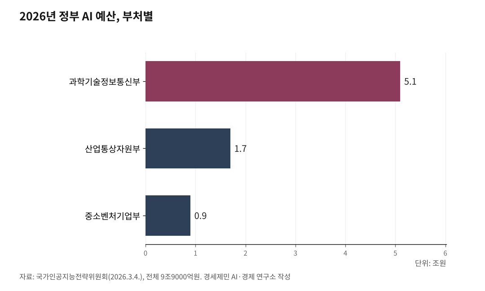

[주간 AI 칼럼] 정부 AI 예산 9조9000억원, 어디에 쓰이나
전년 세 배 역대 최대…절반은 컴퓨팅 인프라에
이번 주 관공서에 첫 적용…전기요금·검증은 과제
정부가 올해 인공지능(AI)에 9조9000억원을 쓴다. 지난해의 세 배, 역대 최대다. 모두 국민이 낸 세금이다.
큰돈인 만큼 국민에게 남는 물음은 하나다. 이 돈이 내 삶의 어디에 닿느냐다. 그 답이 이번 주에 처음 눈에 보이기 시작했다.
1. AI 예산 세 배로 늘었다
대통령 직속 국가인공지능전략위원회가 지난 3월 4일 공개한 자료를 보면, 올해 정부 AI 예산은 9조9000억원이다. 관련 사업만 700개가 넘는다.
이 예산은 지난해 12월 국회를 지나며 확정됐다. 정부가 낸 10조원 남짓에서 일부 사업이 깎여 지금 규모로 정해졌다. 지난해 AI 예산 3조2576억원의 세 배가 넘고, 급히 늘렸던 추가경정예산과 견줘도 두 배 수준이다.
정부는 올해를 'AI 3대 강국(G3) 도약의 원년'으로 내걸었다. 미국과 중국에 이어 세 번째 자리를 노린다는 뜻이다. 한 해 예산이 이만큼 뛴 분야는 흔치 않다. 나라 살림이 빠듯한 가운데 나온 결정이라 더 눈에 띈다.

2. 예산 절반이 컴퓨팅 인프라
9조9000억원을 부처별로 나눠 보면 쏠림이 뚜렷하다. 과기정통부가 5조1000억원으로 전체의 절반이 넘는다. 이어 산업통상자원부가 1조7000억원, 중소벤처기업부가 9000억원을 맡는다.
돈이 가장 많이 몰리는 곳은 그래픽처리장치, 곧 GPU다. GPU는 AI를 학습시키고 굴리는 데 쓰는 고성능 계산 장치다. 과기정통부는 'AI컴퓨팅자원 활용기반 강화' 사업 하나에만 2조1000억원을 넣는다.
AI를 잘 만들려면 좋은 자료와 함께 이 계산 장치가 넉넉해야 한다. 그동안 연산 자원이 모자라 계산을 오래 기다리던 문제를 풀겠다는 것이다.
돈줄도 함께 넓혔다. 중기부는 기술 창업기업에 투자하는 펀드에 3000억원, 금융위원회는 국민성장펀드에 2000억원을 보탠다. 관계 부처는 산업과 일상 곳곳에 AI를 입히는 데도 6000억원을 함께 들인다. 계산 자원과 자금, 사람을 한꺼번에 대겠다는 구상이다.
3. 공공이 AI 첫 고객 된다
예산이 커져도 실제로 쓰이지 않으면 소용이 없다. 그래서 정부는 공공기관을 AI 창업기업의 첫 고객으로 세우는 방식을 택했다.
과기정통부는 지난 6일 '거브테크 창업기업 AI 실증·사업화 지원사업' 대상 18개를 뽑았다고 밝혔다. 거브테크는 정부와 기술을 합친 말로, 공공의 문제를 기술로 푸는 기업을 가리킨다.
방식은 짝짓기에 가깝다. 중앙부처와 지방자치단체가 현장의 문제를 먼저 내놓는다. 그러면 그 문제에 맞는 기술을 가진 기업이 짝을 이뤄 실제 현장에 적용해 본다. 갓 만든 기술을 실제 무대에서 검증하는 일을 실증이라고 부른다.
초기 기업이 가장 넘기 힘든 문턱이 첫 고객이다. 이름값 없는 회사의 제품을 누가 먼저 사 주기는 쉽지 않다. 그 자리를 정부가 대신 열어 준 것이다.
4. 실증과제 18개 착수 시작
이번 사업은 지난 3월 공고 뒤 82건이 접수됐다. 이 가운데 18개가 최종 선정됐다. 경쟁률은 네 대 일을 넘었다.
분야는 셋으로 나뉜다. 대국민 공공서비스 고도화가 7건, 지역·사회문제 해결이 5건, 공공 인프라 혁신이 6건이다. 국민 생활과 지역, 사회 기반시설을 두루 아우른다.
구체적인 과제를 보면 국민 삶과 얼마나 가까운지 눈에 들어온다. 조달청의 공공 서류 사전검토, 천안시의 교차로 꼬리물기 단속, 한국도로공사의 고속도로 배수 설계 검증 등이 들어 있다. 관공서에서 겪던 대기와 서류, 도로 위 정체를 줄이겠다는 것이다.
선정된 기업에는 실증 기회만 주지 않는다. 사업 모델 진단과 컨설팅, 투자 유치 연결도 함께 준다. 선정 기업들은 7일부터 9일까지 착수보고회를 열고 실증에 들어갔다.
5. 투자자가 볼 대목은 반도체
투자자 입장에서 눈여겨볼 고리는 반도체와 데이터센터다. 정부가 GPU를 대규모로 사들이면 국내 공급망의 납기와 가격에 영향을 준다. GPU를 만드는 해외 기업과 이를 다루는 국내 반도체·데이터센터 기업으로 일감이 번진다.
정부는 국가AI컴퓨팅센터도 짓는다. 삼성SDS 컨소시엄이 전남 해남에 세우며, 올해 3분기 착공해 2028년 문을 열고 2030년까지 GPU 5만 장을 확보한다. 특수목적법인 지분은 민간이 71%, 정부가 29%다. 민간이 사업의 키를 쥐고 이끄는 구조다.
국민이 짚어야 할 대목은 비용이다. 국회예산정책처는 데이터센터를 돌릴 전력과 전기요금 부담을 제때 손봐야 한다고 지적했다. 일반용 전기요금은 2021년 1킬로와트시에 128.47원에서 2024년 172.99원으로 올랐다. 예산정책처는 나랏돈이 민간 경쟁력과 인재 확보로 이어지는지 검증이 필요하다고 밝혔다.
세금이 새지 않는지도 문제다. 2026년 예비타당성 조사를 면제받은 신규 사업 20개 가운데 14개가 AI 사업이다. 예비타당성 조사는 큰돈이 드는 사업을 미리 따져 보는 절차다.
올해의 그림은 분명하다. AI에 들어간 세금은 계산 장치와 전력, 데이터센터로 흘러간다. 그리고 이번 주 처음으로 관공서 현장에 닿기 시작했다.
국민은 구경꾼이 아니다. 돈을 댄 주인이자, 그 서비스를 받을 당사자다. 성과가 관공서 서비스로 돌아오는지, 전기요금과 세금이 헛되이 새지 않는지가 앞으로 지켜볼 대목이다.
참고문헌
· 「"대한민국 AI 3강 간다"…정부, 10조 프로젝트 공개」, 이나연, 지디넷코리아, 2026.3.4., https://zdnet.co.kr/view/?no=20260304101125
· 「정부, 거브테크 스타트업 18곳에 AI 실증 무대 깔아준다」, 이나연, 지디넷코리아, 2026.7.6., https://zdnet.co.kr/view/?no=20260706171849
· 「2026년 GovTech 창업기업 AI 실증·사업화 지원사업 모집 공고」, 정보통신산업진흥원(NIPA), 2026., https://www.nipa.kr/home/2-2/16596
· 「해남 국가AI컴퓨팅센터, 3분기 첫삽 뜬다」, 장형임·김태호, 서울경제, 2026.3.10., https://www.sedaily.com/article/20017554
· 「AI 예산 10조 시대 열렸지만… "돈만 쓴다고 G3 되나"」, 안선기, 산업종합저널, 2026.1.26., https://industryjournal.co.kr/news/244757
· 「정부발 AI 거품? 내년 10조 투입 속 예타 면제 14건의 경고등」, 이승현, 비즈한국, 2025.12.5., https://bizhankook.com/articles/30882.html
※ 이 칼럼은 AI 프로그램 클로드를 활용해 작성했습니다.
#AI예산 #9조9000억 #국민세금 #거브테크 #공공AI실증 #국가AI컴퓨팅센터 #GPU #AI3대강국 #전기요금 #예비타당성면제